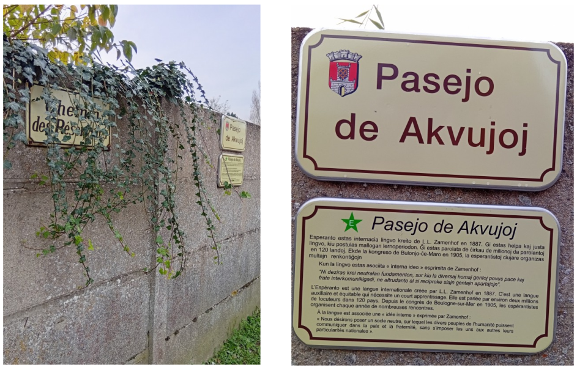

Un zeo à Châteaufort

Vendredi 15 novembre 2024 a été posé à Châteaufort (Yvelines) un panneau relatif à l’Espéranto. Ce panneau a une signification spéciale pour les espérantistes : on l’appelle un zeo (acronyme de Zamenhof-Esperanto-Objekto). C’est un objet commémoratif (rue, arbre, statue, timbre, etc.) en l’honneur de l’initiateur de l’Espéranto, Louis-Lazare Zamenhof. Le zeo est une tradition qui remonte à 1896 ! On en recensait plus de 1400 dans une soixantaine de pays en 2008 et si on en compte actuellement environ 130 en France, celui-ci est le premier des Yvelines.
Le panneau rappelle le projet humaniste de son créateur : une langue pour la paix. L’espéranto est une langue neutre mais elle n’est pas sans idéal. Zamenhof l’appelait l’idée interne qu’il définissait ainsi :
« L’idéal espérantiste désire poser un fondement équitable, sur lequel les divers peuples de l’humanité puissent communiquer dans la paix et la fraternité, sans imposer les uns aux autres leurs particularités nationales ».
En ces temps troublés, la pose de ce panneau est donc un geste symbolique de paix.